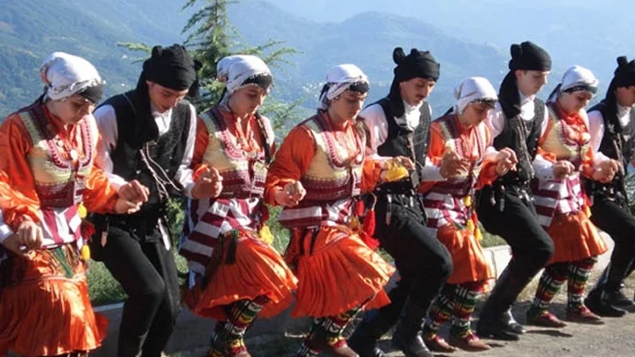

Horon
Horon, Doğu Karadeniz Bölgesi'nde oynanan geleneksel halk danslarının genel adıdır. Sinop'ta (Doğu Karadeniz göçmenleri ve kısmen yerli halk tarafından), Samsun, Ordu, Giresun, Trabzon, Rize, Artvin, Gümüşhane, Bayburt'un Aydıntepe ilçesi, Erzurum'un İspir, Tortum ve Olur ilçelerinde (kısmen horon-bar karışık) ve Doğu Karadeniz'den göçenlerden dolayı Sakarya'da oynanan çevik hareketli oyunlardır.

Karadeniz bölgesinde Samsun sınırından Gürcistan sınırına kadar olan bölgede, düğün, nişan, asker uğurlaması, yayla şenlikleri gibi toplu eğlencelerde kemençe ile Beşikdüzü, Çarşıbaşı, Akçaabat, Yomra, Of, Sürmene, Aydıntepe, Çaykara, Kemalpaşa,, Görele, Güce, Eynesil, Espiye, Şebinkarahisar, klarnetle, Ordu Merkez, Perşembe, Ulubey, Gülyalı, Kabadüz, Fatsa, Piraziz ve Bulancakta, tulum ile Artvin ve Çayeli'nin batısındaki Rize ile Borçka ve Şavşat, Ardeşen, Fındıklı, Pazar, Çamlıhemşin, Hemşin, İspir, Tortum, Hopa, Arhavi ve neredeyse bütün yörelerde davul-zurna eşliğinde, yalnız erkekler (erkek horonu), yalnız kadınlar (kız horonu) ya da kız-erkek karışık (karma horon) olarak; türkü eşliğinde (sözlü horon) ya da sadece çalgı eşliğinde; düz çizgi, yarım daire ya da halka yapısı formunda; hızlı ve çevik hareketlerle oynanmaktadır.
.png)